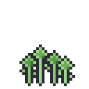

Cozy system
Every value here already exists in src/theme.ts.
What's new is the lip — a solid drop shadow that makes a control read as a physical object rather than a coloured rectangle.
The lip
A button gets box-shadow: 0 5px 0 <darker> — no blur.
Pressing translates it down by the lip's height and removes the shadow, so it physically sinks.
This one detail is most of the difference between "app button" and "game button".
Rest
lip 5px
Pressed
translateY(5px), lip 0
Disabled
no gradient
Buttons
Primary
Secondary
Text action
Chips
Always alignSelf: 'flex-start'. Without it a chip stretches to the parent and becomes a banner.
Selected
Default
Female
Male
Segments
A recessed track with one raised segment. The Shop's tabs had neither.
Themes
Places
Goodies
Alignment rules
The misalignment you spotted came from four different things failing, not four decisions. These are the rules that keep it fixed.
1
One gutter per screen. 24px, from GUTTER. Header, body and footer all start on it — the Shop had four different insets.
2
Header rows are alignItems: 'center'. The back arrow, the title block and the action share one axis. The arrow was floating between two title lines.
3
Optical edges, not box edges. A 44pt tap target around a 16pt glyph indents the row by 14pt. Pull it back with a negative margin so the glyph sits on the gutter.
4
Never space siblings with whitespace or per-child margins. Use gap on a flex parent — it survives adding, removing and reordering.
5
44pt minimum on anything tappable, including the ones that currently read as text links.
Type
Quicksand for anything structural, Nunito for body. Both are in your tokens already — neither is linked, so the app renders in Roboto today.
Cat-a-log Quicksand 700 / 25
Section heading 700 / 17
Body copy sits in Nunito at 14 with a 20 line height. Nunito 400 / 14
Secondary and captions. Nunito 400 / 12.5
Colour
Unchanged from your tokens, plus a lip tone per fill.
ginger
lip
light
ink
cream
sunken
rare
asphalt
Icons: drawn, not emoji
Emoji render differently per OS, ignore the pixel grid, and sit badly beside hand-authored sprites. UI icons are 24px stroke; anything in the world is pixel art.


